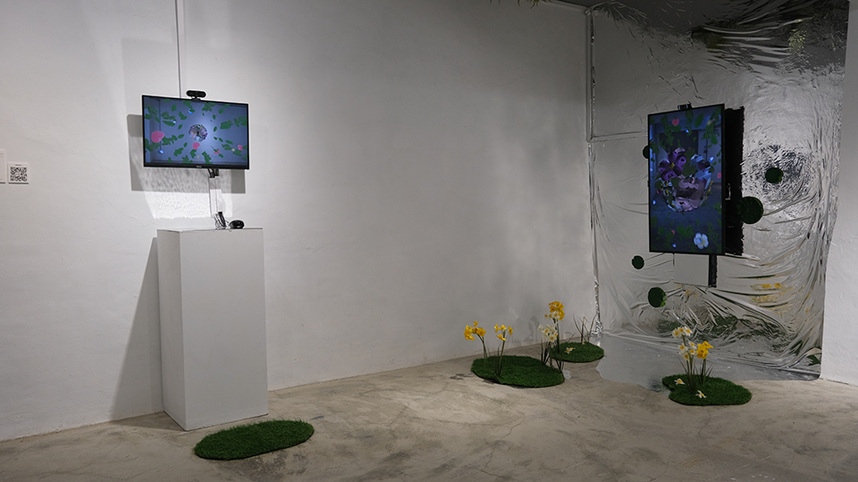

螢幕顯示的漣漪代表當下數位花園中隱形的遊客 / 螢幕錄影
螢幕顯示的漣漪代表當下數位花園中隱形的遊客 / 螢幕錄影
《數位鏡·花園》是我想像的一處數位風景，呈現數位時代使用自媒體的過程，除了單向的在照一面鏡子之外，人們始終還是透過網路保持連結， 借由營造ㄧ個數位空間中的花園，在個人與群體之間打造一個互動平衡的媒體介面。

《數位鏡·花園》於良室藝術空間展出影像紀錄
《數位鏡·花園》使用 3D 模型貼圖的概念讓視訊影像即時轉換成虛擬模型的貼皮，觀眾透過觀看自己的影像進入到作者所創造的「數位花園」，並且透過同步的互動網頁技術，試圖讓不在現場的觀眾也能透過網路同步進入到這座「數位花園」。
觀眾之間看不到彼此的影像，但是當其中一位觀眾點集畫面時，同時在這座虛擬花園空間的其他觀眾也能察覺到他者的存在，是一座具有隱私性的公共花園。
《數位鏡·花園》於良室藝術空間展出影像紀錄
Credit：洪偉瑄(Sandi Hung)
技術指導：張靜馨